Outbound Messaging
IDoc Messaging
Route existing SAP IDocs to cloud message brokers without changing the IDoc setup. The Add-on intercepts outbound IDocs, converts segment data to JSON and forwards them through the standard outbound pipeline – reusing your existing IDoc partner profiles.
Overview
ASAPIO can convert SAP IDocs to JSON and send them to any configured messaging connector. It also supports receiving JSON messages and converting them back to IDocs for inbound SAP processing. This enables IDoc-based integration scenarios without requiring ALE/IDOC-compatible middleware.
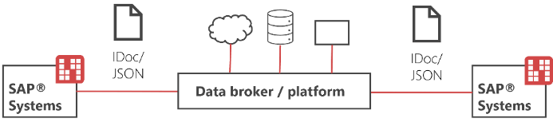
Outbound (IDoc → JSON → Cloud)
ALE Configuration
Configure standard SAP ALE for outbound IDoc triggering:
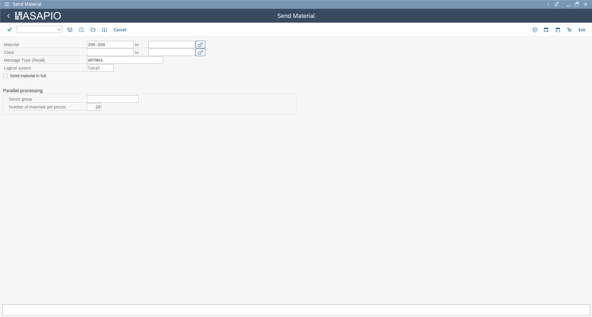
- SALE: Define the SAP logical system (use
LOCALfor the source system) - BD64: Create an ALE distribution model – define a message type for the target partner
LOCAL - WE21: Create a port named
ACI_IDOCusing function module/ASADEV/ACI_IDOC_PORT_TRIGGER(port type: Function Module) - WE20: Create a partner profile for partner type
LS(logical system), partner numberLOCAL:- Add the outbound parameter with the message type from BD64
- Set the port to
ACI_IDOC - Set the output mode to process immediately
Outbound Object Configuration
Configure the outbound object in /ASADEV/ACI_SETTINGS:
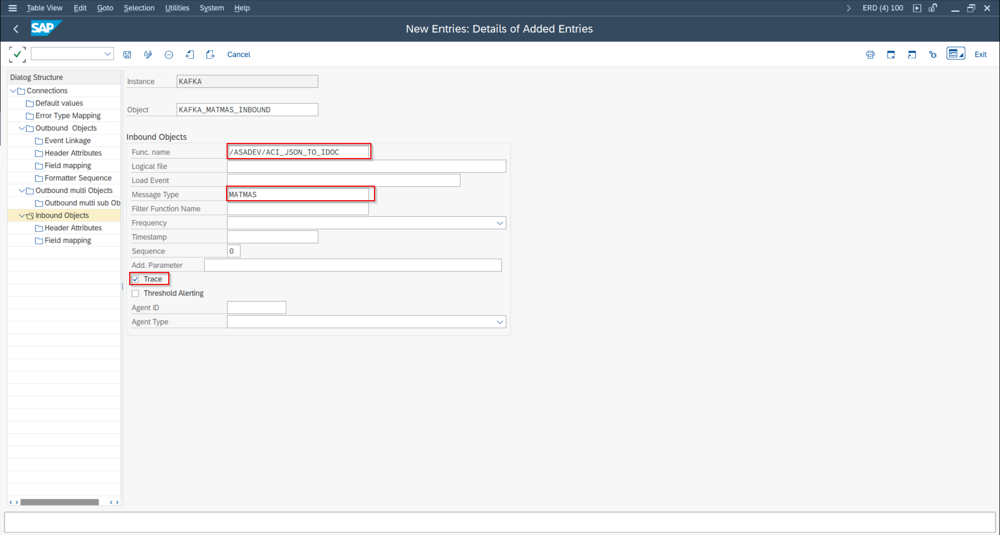
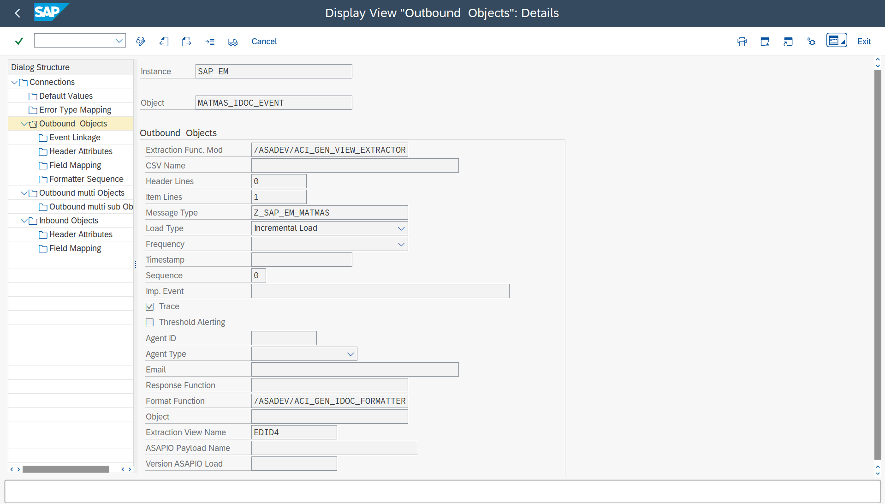
- Extractor FM:
/ASADEV/ACI_GEN_VIEW_EXTRACTORwith the IDoc data viewEDID4 - Formatter FM:
/ASADEV/ACI_GEN_IDOC_FORMATTER
Event Linkage
Link the ASAPIO IDoc trigger to the outbound object via event linkage:
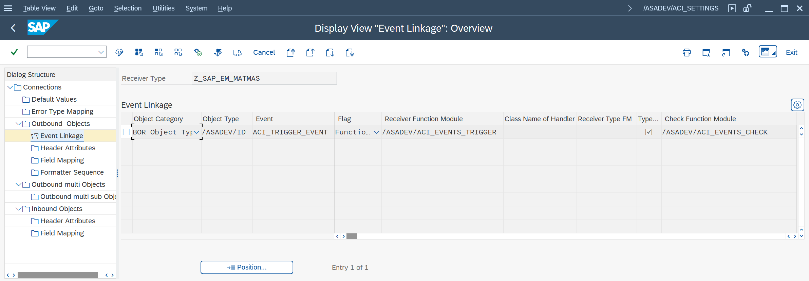
| Field | Value |
|---|---|
| Object Type (BOR) | /ASADEV/ID |
| Event | ACI_TRIGGER_EVENT |
Connector-Specific Header Attributes
Add connector-specific header attributes to the outbound object. Common attributes across connectors:
| Attribute | Description |
|---|---|
BOR_ATTRIBUTE_MessageType | The IDoc message type (e.g. ORDERS) |
AZURE_TOPIC / KAFKA_TOPIC / etc. | Target topic/queue name (connector-specific) |
Testing Outbound
Test IDoc outbound processing using transaction BD10 (Send Material Master) or the equivalent transaction for your IDoc type. The IDoc will be converted to JSON and sent to the configured connector.
Inbound (Cloud → JSON → IDoc)
Inbound Function Module
Use function module /ASADEV/ACI_JSON_TO_IDOC to convert an incoming JSON message to an IDoc. This function module:
- Parses the JSON payload
- Maps the JSON fields back to the IDoc segment structure
- Creates the IDoc and posts it for inbound processing
Inbound IDoc Configuration
Configure standard SAP IDoc inbound processing:
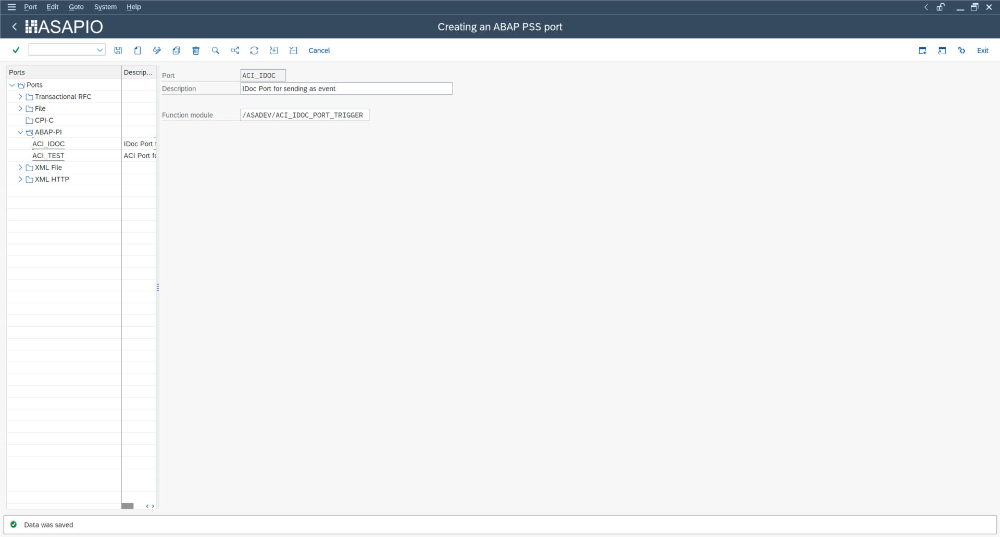
- WE20: Partner profile for inbound – partner type
LS/ partnerLOCAL, inbound parameters with message type and process code - WE42: Define a process code that maps to the inbound function module
JSON Schema
The JSON schema for any IDoc type can be exported from SAP using transaction WE60 (IDoc Documentation). ASAPIO's JSON-to-IDoc converter uses the standard segment and field names as JSON key names.
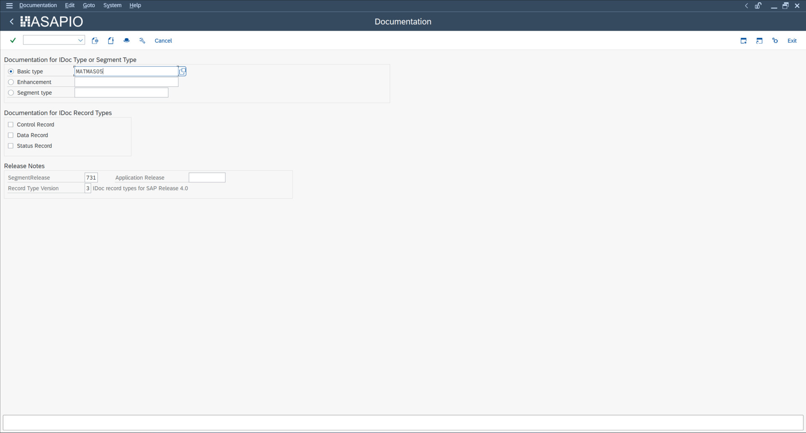
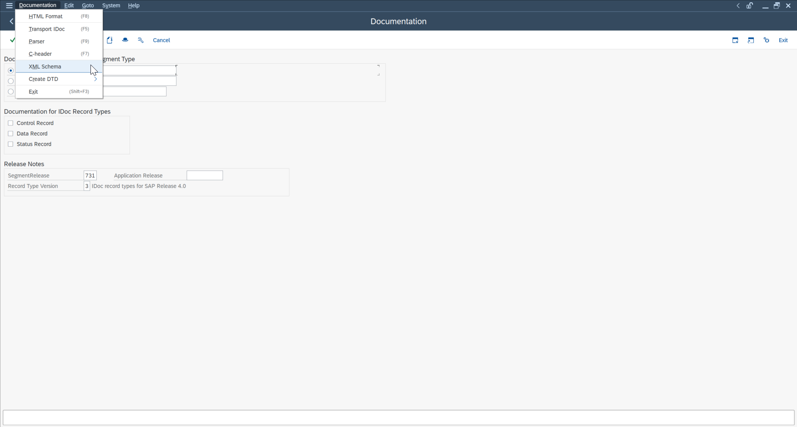
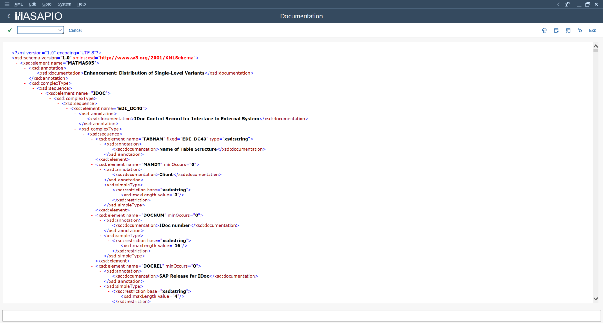
PUSH and PULL Modes
For inbound scenarios, ASAPIO supports two reception modes:
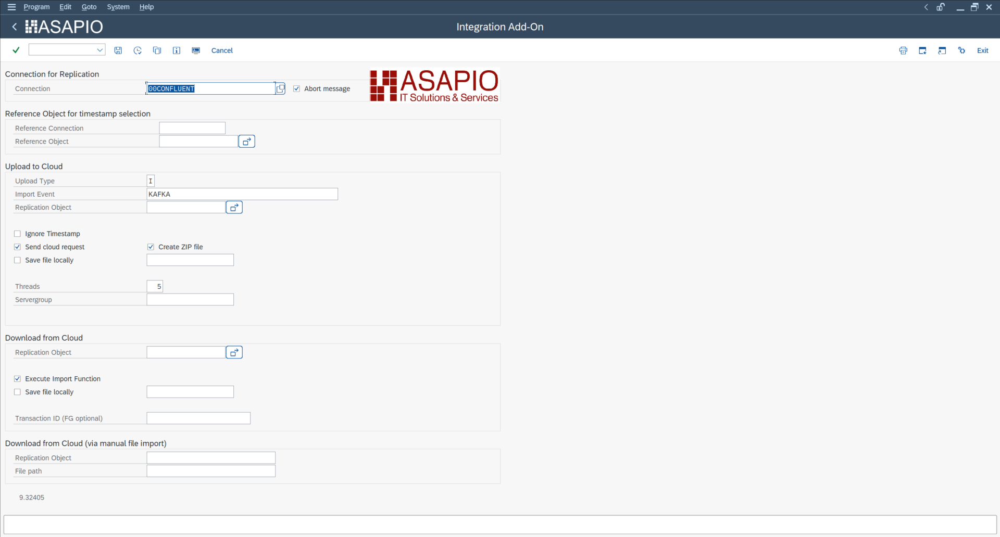
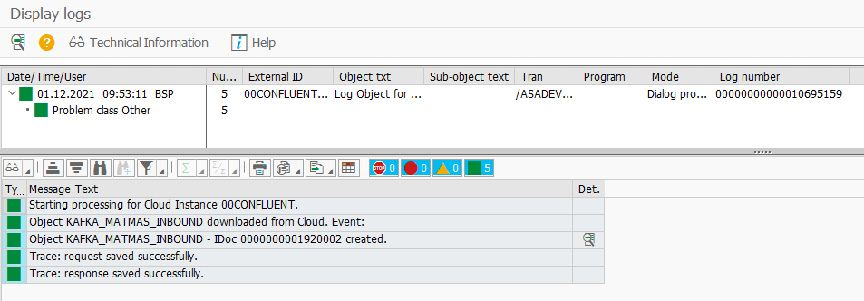
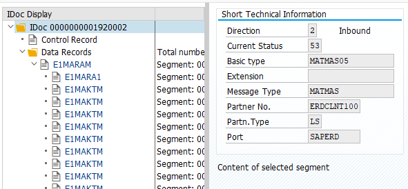
- PUSH: External systems call the ASAPIO SICF endpoint directly. Activate the
/asadevnode in SICF, then call:https://host:port/asadev/{instance}/{object} - PULL: ASAPIO polls the messaging platform for new messages. Use transaction
/n/ASADEV/ACIto schedule the pull job with your connection instance and inbound object.